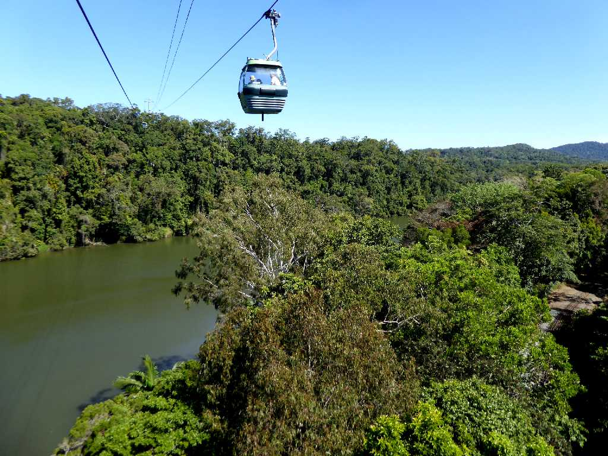
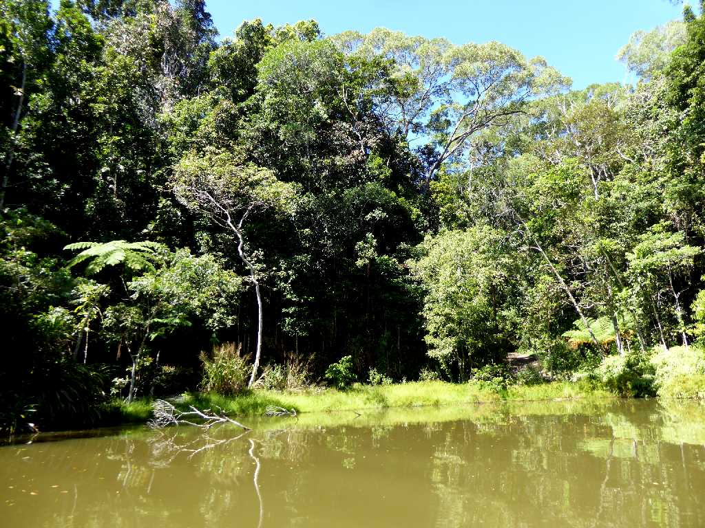
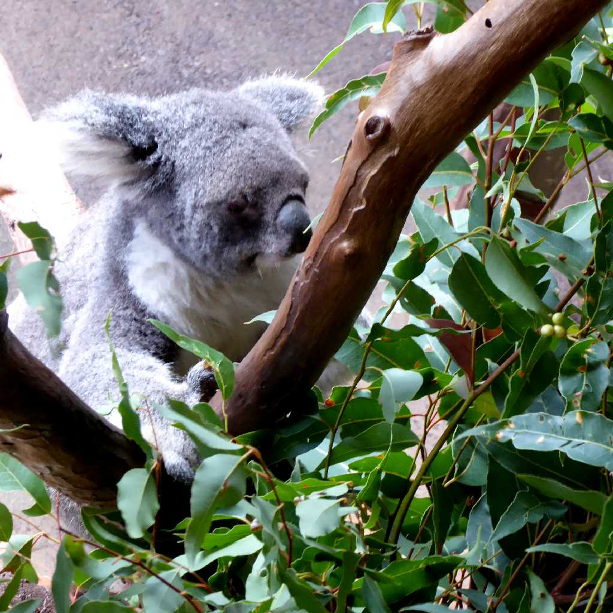
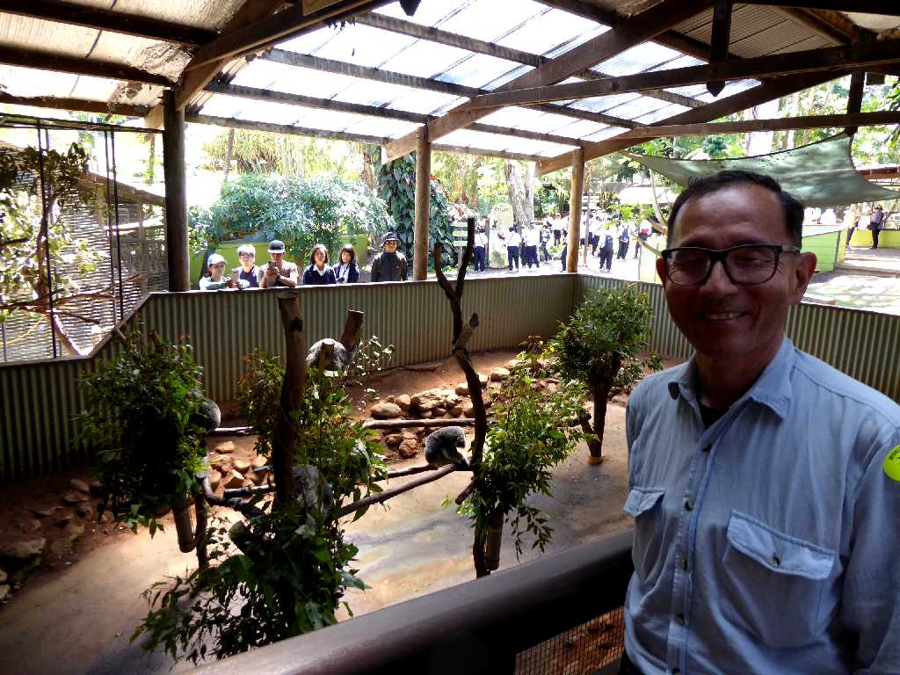
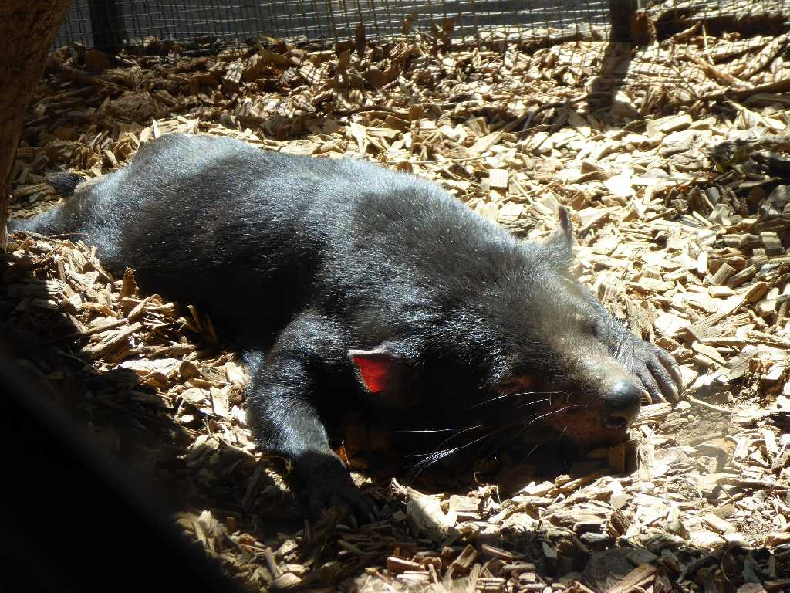

Kuranda
恐竜が生息していた１億３千年前に形成された世界最古の熱帯雨林キュランダの森の上空をスカイレイルで空中散歩

Forest Rainforestation Nature Park Kuranda
水陸両用車のアーミーダックで熱帯雨林を探訪

Koala Rainforestation Nature Park

September 3 2019 Rainforestation Nature Park

Tasmanian Devil Rainforestation Nature Park